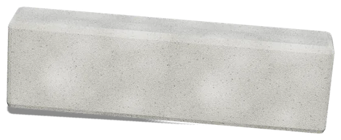
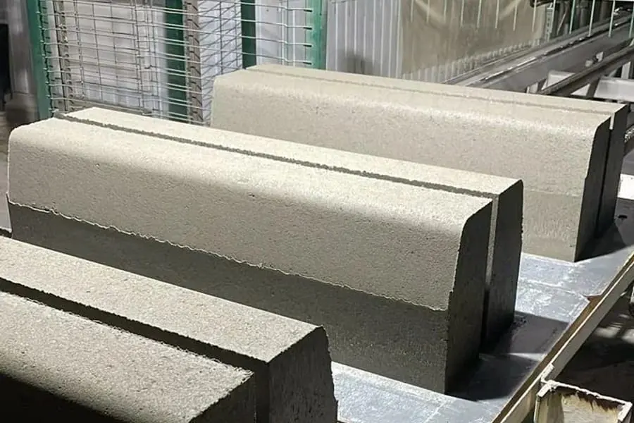

БР 100.30.15
Бордюр
Бордюр дорожный БР 100.30.18
М400 или М300 · 1000×300×180 мм · 15 шт/поддон
1 020 — 1 370 ₽за шт
прайс от 01.09.2026 · с НДС 22% · самовывоз с площадки в Артёме
Усиленный дорожный борт 300×180 мм: магистрали, промплощадки, тяжёлый транспорт.
- ГОСТ 6665-91Стандарт
- 114,38 кгМасса штуки
- 15 штНа поддоне
01 / Характеристики
Что стоитв паспорте
- Маркировка
- БР 100.30.18
- Размер
- 1000×300×180 мм
- Марка бетона
- М400
- Стандарт
- ГОСТ 6665-91ГОСТ 6665-91 «Камни бетонные и железобетонные бортовые»
- Масса изделия
- 114,38 кг
- На поддоне
- 15 шт
- Масса поддона
- 1 715,7 кг
- Сертификат
- РОСС RU.НЕ06.Н11529
Исполнения и цены
М300, ТУ1 020 ₽шт
М400, ГОСТ 6665-911 370 ₽шт
Где применяется
- Магистральные улицы
- Промышленные площадки
- Остановочные карманы
- Зоны погрузки
02 / Калькулятор
Объём, поддоныи стоимость
03 / Описание
Зачем этапозиция
Бортовой камень сечением 300×180 мм — на 30 мм выше дорожного БР 100.30.15. Такое сечение берут там, где борт принимает регулярный удар колесом: магистральные улицы, въезды на промышленные площадки, разворотные площадки, зоны погрузки, остановочные карманы с автобусным движением.
На что смотреть. В прайсе завода строка марки М300 напечатана с опечаткой: там повторены размеры и раскладка предыдущей позиции. На сайте размер и раскладка приведены по обозначению БР 100.30.18 и по ГОСТ 6665-91. Перед заказом М300 сверьте параметры со счётом.

Бортовой камень крупным планом: фактура вибропрессованного бетона и фаска
Частые вопросы
Чем отличается от БР 100.30.15?
Высотой сечения: 180 мм против 150 мм. Камень глубже садится в обойму и лучше держит линию там, где на борт регулярно наезжают.
Сколько камня на поддоне?
15 штук — это подтверждённая заводом раскладка. Камень весит 114,38 кг, поддон — 1 715,7 кг плюс около 30 кг тары. В печатном прайсе по этой позиции стоит 18 штук: цифру там поправят, рабочая — 15.
Нужна ли бетонная обойма?
Да. Под транспортной нагрузкой борт ставят на бетонное ложе с упором с тыльной стороны, на песчаное основание такой камень не ставят.
04 / Рядом